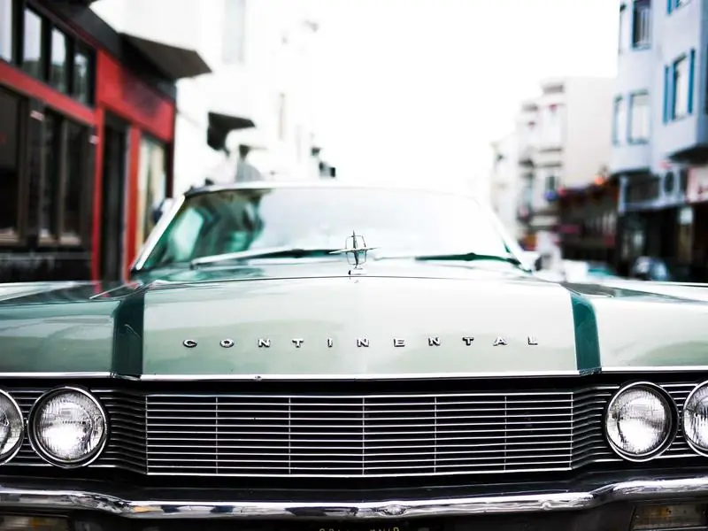

Снежная крупа нещадно била в лобовое стекло старого гоночного «дюсенберга». Эллери Куин до боли в суставах сжимал руль, вглядываясь в серые очертания горной дороги. На заднем сиденье инспектор Куин хмуро курил трубку, и дым его табака мешался с запахом перегретого мотора. Они мчались в Арройо — крошечное селение, о котором раньше знали только местные почтальоны, а теперь кричали все газеты страны.
— Вчера это был просто перекресток, — пробасил инспектор, вытирая запотевшее стекло. — А сегодня это Голгофа. Ты видел заголовки, Эллери? «Распятый на Рождество». Это не просто убийство, это вызов всему человечеству.
Эллери молчал. Его разум уже строил логические цепочки. Учитель, топор, отсутствие головы... И этот проклятый символ Т. Почему Т? Почему сейчас? Воздух гор казался тяжелым от предчувствия беды. Каждый поворот дороги мог стать последним, а тишина безлюдных ферм была громче любого крика.